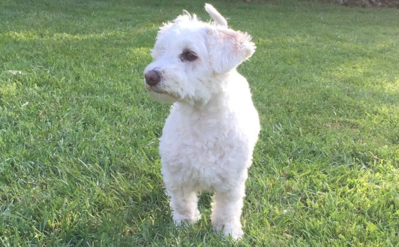

Le projet
 Bonjour et bienvenue !
Bonjour et bienvenue !
Il est souvent dit que pour maîtriser un art, il est nécessaire de s'y exercer. C'est le but de ces quelques pages internet. Cependant, il n'est pas aisé de trouver un matériau de base, lorsqu'on part de rien. Mais quoi de plus facile que de parler de ce qu'on connait et ce qu'on chérit ? Et quoi de plus amusant que d'en parler en imitant la pensée d'un être qui ne pourra pas me le reprocher ? N'ayant pas de nouveau-né à faire babiller, c'est tout naturellement qu'un petit chien à fourrure de coton a pris la place d'auteur.
Et comme le dit si bien Victor Hugo :
" Regarde ton chien dans les yeux et tu ne pourras affirmer qu’il n’a pas d’âme. "
Comment ne pas vouloir plonger dans les tréfonds du coeur d'un si bel animal ?
La découverte commence maintenant ...
L'auteur
Il
est donc temps de me présenter rapidement, moi qui suis l'auteur des lignes qui vont
suivre.
L'humain est un être très visuel et plutôt impatient. Alors pour accrocher le lecteur, j'ai décidé de commencer par une photo de moi, sur laquelle je suis à mon avantage, vous en conviendrez. 
Mon nom est Gecko, comme le reptile aux multiples couleurs. La raison du choix de ce nom était assez peu originale, voire même tristement banale. Cependant, le hasard faisant merveilleusement bien les choses, ce nom fait écho à mes origines. Vous pourrez en apprendre plus en lisant mon blog.
J'ai 9 ans (soit 56 ans en âge humain). J'ai plutôt bien vieilli si vous voulez mon avis.
Je partage ma vie avec plus ou moins 6 colocataires. Tous ne sont pas toujours présents malheureusement. Que voulez-vous, ainsi va la vie. Les plus jeunes s'envolent vers de nouvelles aventures, et je reste avec les plus âgés. Nous vieillissons côte à côte. J'ai aussi des grands-parents, que je vois de temps en temps. Je garde chacune de ces personnes au chaud dans mon cœur, en attendant de pouvoir à nouveau leur sauter sur les genoux.
Pour aller plus loin
Je
vous invite maintenant à parcourir une à une les pages de ce site, pour en apprendre
plus sur mon monde merveilleux et passer un bon moment. Et si vous aimez être bichonné
et souhaitez avoir des informations personnalisées, ou simplement me parler, vous pouvez
vous rendre sur ma page contact.